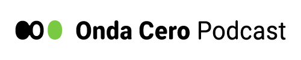
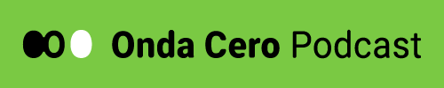
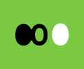
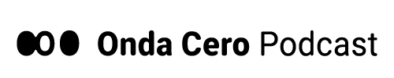
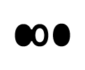
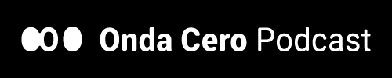
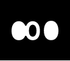

Marca
La nueva marca de Onda Cero parte de la idea de código binario combinada con el propio nombre de la marca: la O y el 0 tienen formas muy similares. Mantiene los colores de la marca anterior pero con un ligero cambio en el tono de verde, más vivo y vibrante. Tiene una forma horizontal, con el nombre de la marca en la tipografía Roboto adaptada para ser más redondeada y de carácter más orgánico. Además cuenta con una versión compacta, formada únicamente por los tres ceros, que puede utilizarse como símbolo en espacios más reducidos y cuadrados.







Tamaño mínimo